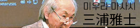
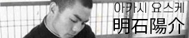
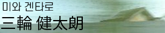
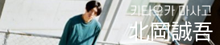
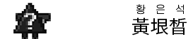

Credit
| 청기사. KADOKAWA가 발행하는 일본의 월간 만화잡지. 「청기사」, 「유리이카」, 「현대사상」, 「신화/민속/전설」, 「과학/수학/생물학」 등 다양한 잡지들을 총괄. | |
|  | 문예 평론가, 「유리이카」 「현대사상」 창립자이자 초대 편집장. 「유리이카」의 폐간 위기를 구한 재건에 공헌해 특집 형식을 채택해 많은 증간호, 특별호를 간행. |
|  | 「유리이카」 현 편집장. |
| 한국 엔터테인먼트 라이터｜번역가｜Yahoo! 뉴스 전문가｜게이오 외국어 강사｜한국 영화 100선｜BTS 읽기｜BEYOND THE STORY : 10-YEAR RECORD OF BTS | |
|  | 만화 연구자｜도쿄대학 대학원 종합문화연구과 초역문화과학전공(표상문화론 코스) 부교수｜박사(표상문화학)｜저서 『만화와 영화－컷과 시간의 이론』 |
|  | 그래픽 디자이너. 「유리이카」의 장정, 조판, 포스터나 리플릿 등을 디자인. |
|  | 일러스트레이터, 디자이너. 「유리이카」 한국 출판 기획, 웹사이트 디자인, 번역 |
| 디자이너. 「유리이카」 한국 출판 기획, 웹사이트 제작 및 기술 |